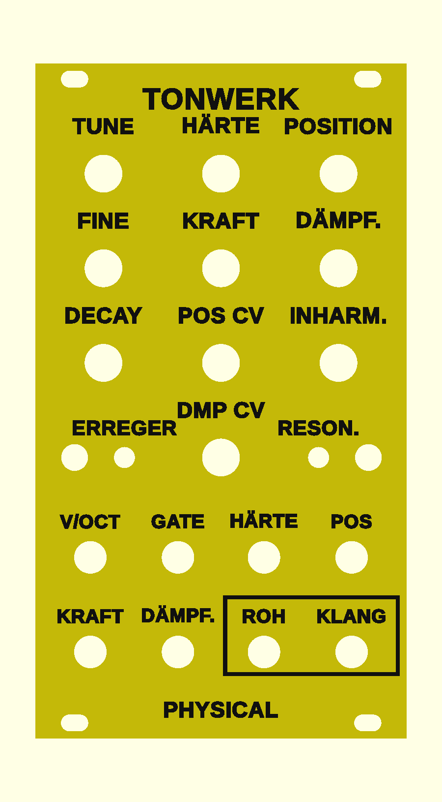

Tonwerk Physical als Eurorack-Modul
Eine zweite Firmware für dieselben Platinen wie das Wavetable-Modul: die Klangerzeugung des Plugins Tonwerk Physical. Statt Wellenformen abzuspielen, rechnet das Modul nach, wie ein Instrument schwingt. Ein Erreger (Zupfen, Schlagen, Streichen, Blasen) bringt einen Resonator (Saite, Rohr, Stab, Glocke, Fell, Schale) zum Klingen, auf Wunsch durch ein Filter und einen Korpus.
Überblick

- Dieselbe Engine wie das Plugin, in float neu geschrieben: Saite und Rohre als Verzögerungsleitungen, Stab, Glocke, Fell und Schale als bis zu 16 Resonanzen. Ein Test auf dem Rechner vergleicht alle 28 Paare aus Erreger und Resonator mit dem Plugin.
- Bis zu vier Stimmen: jeder Anschlag nimmt die nächste, die alten klingen aus. Eine Folge von Noten wird so zum Akkord oder zur Harfe.
- Zwei Ausgänge: ROH sind die Stimmen ohne Korpus, KLANG dieselben durch den Korpus (Gitarre, Geige, Kiste, Resonanzboden). Ohne Korpus sind beide gleich.
- Sechs Eingänge: V/OCT, GATE und CV für Härte, Position, Kraft und Dämpfung.
- Eine eigene Frontplatte, gedacht gelb mit schwarzer Schrift, damit man die beiden Module im Rack auseinanderhält.
Diese Firmware ist auf dem Rechner getestet, auf einem ESP32 ist sie noch nie gelaufen. Die Rechenlast schätze ich auf 10–30 % eines Kerns.
Bedienung
Die Front ist dieselbe wie beim Wavetable-Modul, nur die Beschriftung ist anders. Die WARP-Taste heißt hier ERREGER, die FILTER-Taste RESON.. Ebenen, Pick-up, Halten gegen kurzes Drücken, Speichern und Kalibrieren funktionieren genauso wie dort beschrieben.
Alle Regler
| Regler | Normal | ERREGER gehalten | RESON. gehalten |
|---|---|---|---|
| TUNE | Stimmung ±2 Oktaven in Halbtönen | Attack von Bogen und Atem, 1 ms bis 2 s | Cutoff des Filters, 20 Hz bis 20 kHz |
| FINE | Feinstimmung ±50 Cent | Decay von Bogen und Atem, 5 ms bis 5 s | Resonanz des Filters |
| HÄRTE | Härte des Anschlags: weich und dunkel bis hart und hell | Sustain von Bogen und Atem | Filter: aus, LP12, LP24, HP12, BP (ab Werk aus) |
| POSITION | Wo angeregt wird, vom Rand bis zur Mitte. In der Mitte gezupft verliert eine Saite ihre geraden Obertöne, am Rand wird sie dünn und hell. | Release von Bogen und Atem, 5 ms bis 5 s | Keytracking des Filters |
| KRAFT | Bogendruck und Atem; bei Zupfen und Schlagen, wie stark angeschlagen wird | Rauschen: Kratzen des Bogens, Luft im Atem | Korpus: aus, Gitarre, Geige, Kiste, Resonanzboden |
| DÄMPF. | Dämpfung: wie viel schneller die hohen Obertöne verklingen | Dynamik: wie viel leiser ein schwacher Anschlag ist | Mix des Korpus |
| INHARM. | Inharmonie: bei der Saite die Steifheit, die ihre Obertöne nach oben streckt wie bei einem Klavier; bei den anderen streckt sie die Resonanzen | – | – |
| DECAY | Abklingzeit des Resonators, 20 ms bis 20 s | Stimmen 1 bis 4 (ab Werk 2) | Dämpfer nach dem Gate, 5 ms bis 60 s; ab Werk 60 s, der Ton klingt aus |
| POS CV | Abschwächer für die POS-Buchse: Mitte 0, rechts voll, links umgekehrt | – | – |
| DMP CV | Abschwächer für die DÄMPF.-Buchse: Mitte 0, rechts voll, links umgekehrt | – | – |
Erreger (ERREGER kurz drücken, LED 1)
| LED 1 | Erreger | Was er tut |
|---|---|---|
| gelb | Zupfen | Ein kurzer Stoß über eine Schwingungsperiode. Ab Werk. |
| cyan | Schlagen | Hammer oder Schlägel: je härter, desto kürzer und heller. |
| magenta | Streichen | Ein Bogen mit Haft- und Gleitreibung. Die Saite schwingt von selbst, solange das Gate an ist. |
| grün | Blasen | Am geschlossenen Rohr ein Rohrblatt, das selbst schwingt; sonst ein Luftstrom. Hält den Ton wie der Bogen. |
Resonatoren (RESON. kurz drücken, LED 2)
| LED 2 | Resonator | Wie er klingt |
|---|---|---|
| gelb | Saite | Alle Obertöne, mit INHARM. steif wie eine Klaviersaite. Ab Werk. |
| orange | Rohr geschlossen | Nur ungerade Obertöne, hohl wie eine Klarinette. |
| grün | Rohr offen | Alle Obertöne, wie eine Flöte. |
| cyan | Stab | Obertöne beim 4- und 10-fachen, wie ein gestimmter Marimbastab. |
| blau | Glocke | Mit dem Summton eine Oktave unter dem Schlagton und der kleinen Terz. |
| rot | Fell | Die unharmonischen Töne einer Trommel. |
| magenta | Schale | Klangschale: je zwei eng benachbarte Töne, die gegeneinander schweben. |
Beide LEDs leuchten hell auf, wenn ein Ton angeschlagen wird, und werden mit ihm dunkler, nie ganz aus.
Anschlagen
- Mit Gate
- Jede steigende Flanke an GATE zupft oder schlägt die nächste Stimme an, so stark, wie KRAFT steht. Fällt das Gate, senkt sich der Dämpfer auf die neueste Stimme, so schnell, wie DECAY in der RESON.-Ebene sagt. Ab Werk ist der Dämpfer aus (60 s), jeder Ton klingt aus.
- Nur mit V/OCT
- Ist das Gate an oder steckt kein Kabel in GATE, schlägt jeder Sprung an V/OCT um mindestens einen halben Halbton an. Ein Sequencer ohne Gate spielt so jede neue Note; ein Glide oder ein langsamer LFO zieht dagegen nur die Tonhöhe.
- Tonhöhe
- Die neueste Stimme folgt V/OCT, TUNE und FINE, die älteren klingen in der Tonhöhe weiter, mit der sie angeschlagen wurden.
- Streichen und Blasen
- Halten den Ton, solange das Gate an ist, ihre Hüllkurve liegt in der ERREGER-Ebene. Ohne Gate-Kabel streicht der Bogen dauernd: eine Drone, die man mit KRAFT, POSITION und DÄMPF. formt.
Buchsen
| Buchse | Bereich | Was sie tut |
|---|---|---|
| V/OCT | −1 bis +7 V | Tonhöhe, 1 V pro Oktave, 0 V = C2. Ein Sprung schlägt an (siehe oben). |
| GATE | ab etwa 1,4 V | Steigend: Anschlag. Fallend: Dämpfer auf die neueste Stimme. Ohne Kabel dauerhaft an. |
| HÄRTE | ±5 V | Kommt zur Härte dazu, ±5 V über den ganzen Weg des Reglers. |
| POS | ±5 V | Verschiebt die Position, über den Abschwächer POS CV. |
| KRAFT | ±5 V | Kommt zur Kraft dazu: ein LFO an KRAFT bewegt den Bogen. |
| DÄMPF. | ±5 V | Verschiebt die Dämpfung, über den Abschwächer DMP CV. |
| ROH (Ausgang) | ±5 V | Die Stimmen mit Filter, ohne Korpus. |
| KLANG (Ausgang) | ±5 V | Dieselben durch den Korpus. |
Die Ausgänge haben Modulpegel. Für Kopfhörer sind sie viel zu laut, immer über einen Mixer oder ein Ausgangsmodul gehen.
Erste Patches
- Harfe vom Sequencer
- Tonhöhe an V/OCT, kein Gate-Kabel, KLANG an den Mixer. Zupfen auf der Saite, ERREGER-Ebene: vier Stimmen (DECAY ganz rechts), RESON.-Ebene: Korpus Gitarre. DECAY in der normalen Ebene lang.
- Marimba
- Schlagen auf dem Stab, HÄRTE in der Mitte, DECAY kurz, Gate vom Sequencer. Ein Zufalls-CV an POS macht jeden Schlag etwas anders.
- Gestrichene Drone
- Streichen auf der Saite oder der Schale, kein Gate-Kabel. Ein langsamer LFO an KRAFT, ein zweiter an POS; DÄMPF. formt die Helligkeit.
- Glocken
- Schlagen auf der Glocke, DECAY lang, INHARM. leicht aufgedreht, zwei bis vier Stimmen.
Frontplatte
Dieselben drei Varianten wie beim Wavetable-Modul (Bauanleitung, Schritt 2), mit der Beschriftung dieser Firmware: Schrift erhaben, Schrift vertieft und Schrift als Einlage (3MF, zwei Farben). Gedacht gelb mit schwarzer Schrift: beim erhabenen Druck mit Gelb beginnen und bei 2,5 mm auf Schwarz wechseln.
Firmware
Die Firmware ist eine Datei, tonwerk-physical.bin, geschrieben an Adresse 0x0 wie in der Bauanleitung, Schritt 8. Sie braucht keine Tabellen; der erste Start dauert nicht länger als jeder andere. Zurück zur Wavetable-Firmware geht es genauso, mit tonwerk-modul.bin.
Flashen löscht die gespeicherten Einstellungen und die Kalibrierung. Darum nach dem Flashen neu kalibrieren.
Stand 31.10.2026. Quelltext und Frontplatte stehen auf GitHub unter derselben PolyForm Noncommercial License wie die Plugins: für sich nachbauen ja, verkaufen nur mit Erlaubnis.